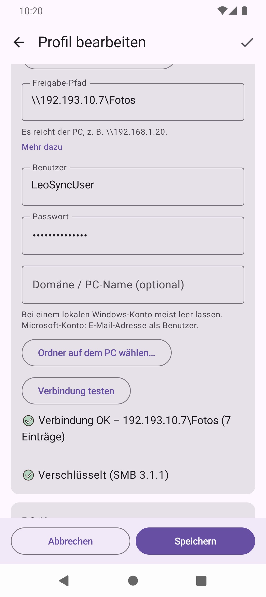

Wie lassen sich Android-Fotos auf den PC übertragen?
- USB-Kabel: Funktioniert ohne Einrichtung, ist aber jedes Mal Handarbeit und wird schnell vergessen.
- Cloud-Dienst: Bequem, doch die Fotos liegen beim Anbieter, und der Speicherplatz ist meist begrenzt.
- Netzwerkfreigabe (SMB): Das Handy schreibt direkt in einen freigegebenen Ordner auf dem PC. Das ist die Variante, die LeoSync automatisiert.
So funktioniert die Übertragung per SMB
Windows kann Ordner im Netzwerk freigeben. LeoSync verbindet sich per SMB2/SMB3 mit dieser Freigabe, meldet sich mit Benutzername und Passwort an und kopiert neue Fotos und Videos hinein. Ohne USB-Kabel, ohne Zwischenserver und ohne Cloud. Die Fotos werden nach Jahr, Monat und Reiseland sortiert, zum Beispiel 2026\06 - Ägypten, und behalten das Änderungsdatum vom Handy.
Einrichtung
- Auf dem PC den Zielordner freigeben und dem Windows-Benutzer Ändern und Lesen erlauben. Die Schritte stehen in der Hilfe, dort auch, wie du einen eigenen lokalen Benutzer nur für LeoSync anlegst.
- Die IP-Adresse des PCs mit
ipconfigermitteln, zum Beispiel192.168.1.20. - In LeoSync Profil hinzufügen, Fotos & Videos sichern wählen und PC, Benutzer und Passwort eintragen. Ordner auf dem PC wählen… zeigt die Freigaben zur Auswahl.
- Mit Verbindung testen prüfen, dann einmal von Hand Synchronisieren tippen.


Danach läuft es automatisch
Sobald das Handy mit einem eingetragenen WLAN verbunden ist, sichert LeoSync neue Fotos im Hintergrund. Ist der PC ausgeschaltet, versucht es LeoSync alle 30 Minuten erneut. Auf Wunsch läuft die Sicherung nur am Ladegerät, und du kannst die Automatik pausieren. Wer Platz auf dem Handy braucht, nutzt Speicher freigeben: Dabei wird jede Datei vorher auf dem PC geprüft.
Fehlerbehebung
| Meldung | Was tun? |
|---|---|
| Benutzer oder Passwort stimmt nicht | Windows-Benutzer und Passwort prüfen. Bei einem Microsoft-Konto die E-Mail-Adresse als Benutzer verwenden, oder einen eigenen lokalen Benutzer anlegen. |
| Der PC ist nicht erreichbar | PC eingeschaltet (nicht im Ruhezustand)? Handy im selben WLAN? Firewall erlaubt «Datei- und Druckerfreigabe»? |
| Der PC-Name wurde nicht gefunden | Statt des Namens die IP-Adresse eintragen, z. B. \\192.168.1.20. |
| Kein Zugriff auf diesen Ordner | In den Freigabe-Berechtigungen dem Benutzer Ändern erlauben. |
Weitere Meldungen und Lösungen findest du in der Hilfe.
Häufige Fragen
Wie übertrage ich Handy-Fotos ohne USB auf den PC?
Gib einen Ordner auf dem PC im Netzwerk frei und trage ihn in LeoSync ein. Die App überträgt neue Fotos automatisch per SMB, sobald das Handy im eingetragenen WLAN ist.
Brauche ich zusätzliche Software auf dem Windows-PC?
Nein. LeoSync nutzt die Windows-Ordnerfreigabe, die in Windows eingebaut ist. Auf dem PC muss nichts installiert werden.
Werden die Fotos auf dem Handy gelöscht?
Nur, wenn du das einstellst. Standard ist behalten. Entfernt werden Fotos erst nach einer geprüften Übertragung und landen im Papierkorb der Galerie.
Welche Android-Version brauche ich?
Android 10 oder neuer.